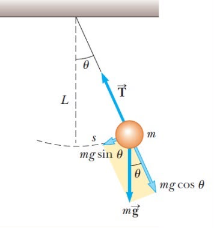
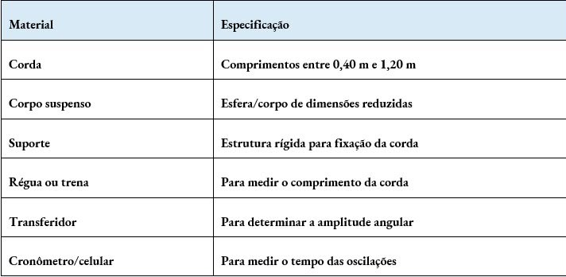
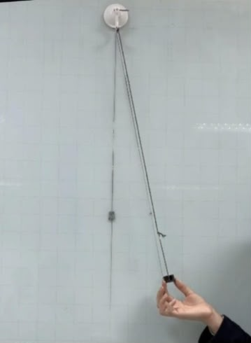
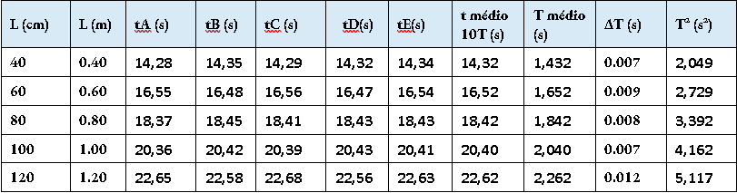
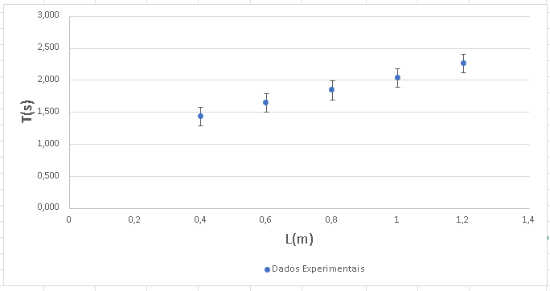
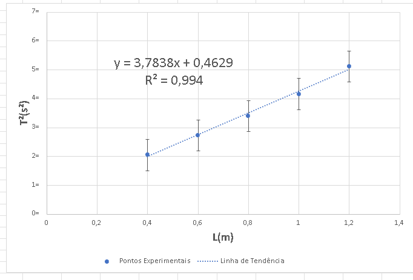
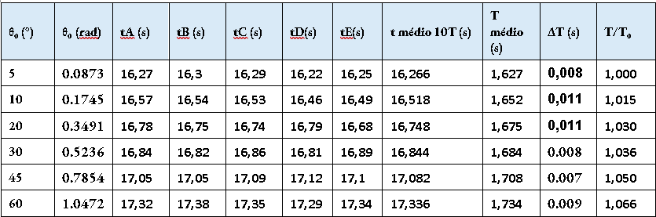
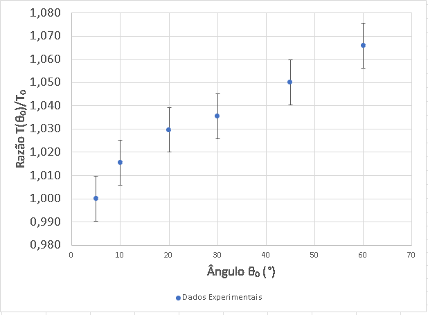
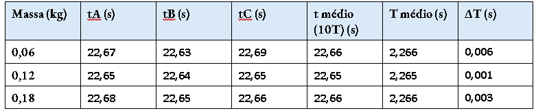
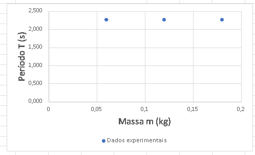

O período de oscilação de um pêndulo simples
Isabela Sassá
Júlia Schuler
Kaline Caetano
Miguel Ribeiro
Pergunta investigativa: como o comprimento da corda, a massa do corpo suspenso e a amplitude angular inicial influenciam o período de um pêndulo simples?
Introdução
O pêndulo simples é um sistema formado por um corpo suspenso por uma corda leve e aproximadamente inextensível. Quando o corpo é afastado da posição de equilíbrio e solto, ele realiza um movimento oscilatório. Neste experimento, foram analisadas três grandezas que podem estar relacionadas ao período de oscilação: o comprimento da corda, a massa do corpo suspenso e a amplitude angular inicial. Foram investigadas as relações entre essas grandezas e o período de oscilação.
Para o comprimento da corda, para a massa e para a amplitude angular, foram realizadas medições do tempo de 10 oscilações, calculando-se depois os períodos médios.
Fundamentação teórica
Cinemática: período de oscilação
O período T corresponde ao tempo necessário para o pêndulo realizar uma oscilação completa. Como as medições foram feitas para 10 oscilações, o período individual foi calculado por:
T = t / 10
Para pequenas amplitudes, o modelo do pêndulo simples prevê que o período depende do comprimento L e da aceleração da gravidade g, mas não depende da massa m do corpo suspenso:
T = 2π √(L/g)
Elevando a expressão ao quadrado, obtém-se a forma linearizada:
T² = (4π²/g) · L
Assim, no gráfico de T² em função de L, o coeficiente angular da reta corresponde a 4π²/g. Com esse coeficiente é possível calcular experimentalmente a aceleração da gravidade. A massa não aparece nessa expressão, indicando que, no modelo ideal e para pequenas amplitudes, corpos de massas diferentes devem apresentar aproximadamente o mesmo período quando o comprimento e a amplitude são mantidos constantes.
Dependência com a massa e com a amplitude angular
No modelo ideal do pêndulo simples, a massa do corpo suspenso não altera o período de oscilação. Por isso, ao comparar diferentes massas, mantendo o comprimento da corda e a amplitude angular constantes, espera-se obter valores de período próximos entre si. Já a amplitude angular pode influenciar o período quando deixa de ser pequena.
Para pequenas amplitudes, costuma-se considerar que o período é praticamente independente do ângulo inicial. Entretanto, quando a amplitude aumenta, essa aproximação deixa de representar exatamente o movimento. Neste trabalho foi utilizado o modelo simplificado de primeira ordem indicado no roteiro:
T(θ₀) ≈ T₀ (1 + θ₀²/16)
Nessa expressão, T₀ é o período de referência para pequenas amplitudes e θ₀ deve ser convertido para radianos. Por isso, a análise angular foi feita por meio da razão T(θ₀)/T₀.

Materiais

Arranjo experimental
O sistema experimental foi montado com um corpo suspenso por uma corda, formando um pêndulo simples. O comprimento da corda foi medido desde o ponto de fixação até o centro do corpo suspenso. Para a análise do comprimento, foram utilizados cinco valores entre 0,40 m e 1,20 m. Para a análise da massa, devem ser utilizados corpos de massas diferentes, mantendo as demais condições constantes. Para a análise angular, foram utilizados os ângulos de 5°, 10°, 20°, 30°, 45° e 60°.
Em cada condição foram realizadas três medições do tempo necessário para completar 10 oscilações. Os tempos foram utilizados para calcular o período médio e a dispersão das medidas.
Incerteza dos instrumentos de medida
A principal incerteza associada à cronometragem está relacionada ao tempo de reação durante o acionamento e parada do cronômetro. A realização de 10 oscilações por medida reduz a influência relativa desse erro sobre o período. Além disso, a dispersão experimental foi estimada pela diferença entre o maior e o menor período obtido em cada conjunto de três medidas.
Procedimento experimental
Preparação
- Montar o pêndulo em uma ventosa e verificar se o ponto de suspensão permanece estável.
- Medir o comprimento da corda desde o ponto de fixação até o centro do corpo suspenso.
- Para a primeira etapa, escolher os cinco comprimentos utilizados na tabela de dados.
- Para a segunda etapa, manter o comprimento e a amplitude angular constantes e realizar as medições utilizando as diferentes massas disponíveis.
- Para a etapa angular, manter o comprimento e a massa constantes e definir as amplitudes de 5°, 10°, 20°, 30°, 45° e 60°. Posicionar o corpo na amplitude escolhida sem fornecer impulso inicial.
Coleta de dados
- Soltar o pêndulo a partir do repouso.
- Medir o tempo necessário para completar 10 oscilações completas.
- Repetir a medida três vezes para cada ângulo e cinco vezes para cada comprimento.
- Registrar todas as medidas.
- Calcular o tempo médio e dividir por 10 para obter o período médio.
- Na etapa da massa, repetir o procedimento para cada corpo, mantendo o comprimento e a amplitude angular constantes, e calcular o período médio de cada condição.
Precauções
Foi necessário evitar impulsos durante a soltura do corpo, manter o suporte estável e realizar as medições sempre com o mesmo procedimento. Na determinação dos ângulos maiores, deve-se ter atenção à leitura do transferidor e à posição de soltura para reduzir erros de paralaxe.

Medições e preenchimento de tabelas
Todas as medições foram organizadas com suas unidades, médias e estimativas de dispersão. A tabela referente à massa foi organizada para comparar as diferentes massas utilizadas no experimento.
Análise gráfica
Os gráficos foram construídos a partir dos valores médios dos períodos. Na análise do comprimento, foram usados os gráficos T × L e T² × L. Para a massa, foi utilizado o gráfico do período médio em função da massa, mantendo o comprimento em 60 cm e a amplitude em 10°. Na análise da amplitude, foi utilizado o gráfico T(θ₀)/T₀ × θ₀, com o ângulo em radianos.
Variação da corda
Tabela da variação da corda
Deslize a tabela para o lado para ver tudo.

Os tempos médios correspondem ao tempo para 10 oscilações. O período médio foi obtido dividindo esse valor por 10. O peso utilizado tinha 60 g e o ângulo era 10 graus.
Gráfico da variação de corda: T

Gráfico do período (T) em função do comprimento da corda (L). O gráfico mostra que o período de oscilação aumenta conforme a corda fica mais longa, indicando uma relação direta entre as grandezas.
Gráfico da variação de corda: T²

Gráfico de T² em função de L. A linha de reta ajustada mostra um bom resultado (R² = 0,994), com a equação y = 3,7838x + 0,4629, o que nos ajuda a calcular a gravidade local, que seria 10,43 m/s².
Variação de ângulo
Tabela da variação de ângulo
Deslize a tabela para o lado para ver tudo.

T₀ = 1,627 s, obtido para θ₀ = 5°.
O peso utilizado tinha 60 g e a corda possuía 60 cm.
Gráfico da variação de ângulo

Gráfico da razão do período pela amplitude angular inicial. Dá para perceber que o período cresce um pouco quando aumentamos o ângulo de soltura, saindo de 1,000 e chegando a 1,066.
Variação de peso
Tabela da variação de peso
Deslize a tabela para o lado para ver tudo.

A corda utilizada possuía 120 cm e o ângulo era 10 graus.
Gráfico da variação de peso

Gráfico do período em função da massa do corpo. Os pontos mostram que mudar a massa (0,06 kg a 0,18 kg) praticamente não altera o período de oscilação do pêndulo.
Discussão dos resultados
A análise de dados experimentais permitiu avaliar a influência da amplitude angular inicial (θ₀) sobre o período de oscilação do pêndulo simples. A partir do gráfico da razão do período pela amplitude angular inicial, observa-se que o período cresce gradativamente com o aumento do ângulo de soltura, saindo de 1,000 e chegando a 1,066 na maior amplitude testada. Esse comportamento apresentou um perfil não linear, e a variação observada no período foi maior do que as incertezas experimentais associadas à cronometragem, o que confirma a relevância estatística e a validade da tendência identificada.
O mecanismo físico responsável por essa variação está associado à aproximação para pequenas oscilações adotada na teoria do pêndulo simples. Para ângulos pequenos (θ ≤ 10°), assume-se a aproximação sen θ ≈ θ, o que torna a força restauradora linear e resulta em um período independente da amplitude. No entanto, para amplitudes maiores, os termos de ordem superior da expansão em série do seno tornam-se significativos, fazendo com que a força restauradora cresça mais lentamente do que o ângulo de deslocamento. Como consequência, o corpo leva mais tempo para completar um ciclo, resultando no aumento do período.
Para garantir a confiabilidade dos dados, mantivemos fixos o comprimento do fio, a massa do corpo e o ponto de fixação durante todo o teste. Quanto às limitações do experimento, percebemos que a resistência do ar, o atrito no pivô e o tempo de reação ao acionar o cronômetro manualmente causaram pequenas variações; por isso, usar sensores ópticos e um disparador mecânico ajudaria muito em testes futuros. Por fim, fica claro que a mudança no período se deve essencialmente à não linearidade da força restauradora em ângulos maiores, e não a eventuais oscilações na massa ou no tamanho do fio.
Avaliação das incertezas e limitações
As principais fontes de incerteza foram o tempo de reação ao iniciar e parar o cronômetro, pequenas diferenças na posição de soltura do pêndulo, a leitura dos comprimentos e dos ângulos e possíveis erros de paralaxe. A realização de várias oscilações antes de parar o cronômetro ajuda a diminuir a influência relativa do tempo de reação. Mesmo assim, as pequenas diferenças observadas na etapa da massa mostram que, para detectar efeitos muito pequenos, seria necessário um procedimento de cronometragem ainda mais preciso.
Para melhorar o experimento, poderiam ser realizadas mais repetições para cada condição e utilizado um sensor ou aplicativo de cronometragem automática, reduzindo a influência do tempo de reação. Também seria importante manter com maior precisão o ponto de soltura e medir o comprimento da corda sempre da mesma maneira.
Conclusão
O experimento investigou como o comprimento da corda, amplitude angular influenciam o período de um pêndulo simples. Os resultados mostraram que o comprimento da corda influencia o período, pois, quando o comprimento aumentou de 0,40 m para 1,20 m, o período aumentou de 1,432 s para 2,262 s. As incertezas dos períodos ficaram entre 0,007 s e 0,012 s, sendo pequenas em comparação com a variação observada.
A massa não apresentou influência significativa no período nas condições analisadas. Para as massas de 60 g, 120 g e 180 g, os períodos foram, respectivamente, 2,266 s, 2,265 s e 2,266 s, com incertezas de 0,006 s, 0,001 s e 0,003 s. Essas diferenças são muito pequenas quando comparadas às respectivas incertezas, indicando que a massa não influenciou de forma perceptível o período.
A amplitude angular também influenciou o período, principalmente nos maiores ângulos. A razão T/T₀ passou de 1,000 em 5° para 1,066 em 60°, mostrando um aumento de aproximadamente 6,6% no período. As incertezas obtidas, entre 0,007 s e 0,011 s, são menores que essa variação, indicando que o efeito observado não pode ser explicado apenas pela incerteza experimental.
Portanto, considerando os dados e as margens de erro obtidas, conclui-se que o comprimento da corda e a amplitude angular influenciaram o período do pêndulo, enquanto a massa não apresentou influência significativa nas condições do experimento. As principais fontes de incerteza estão relacionadas à cronometragem manual, à posição de soltura do pêndulo e às medições do comprimento e do ângulo.